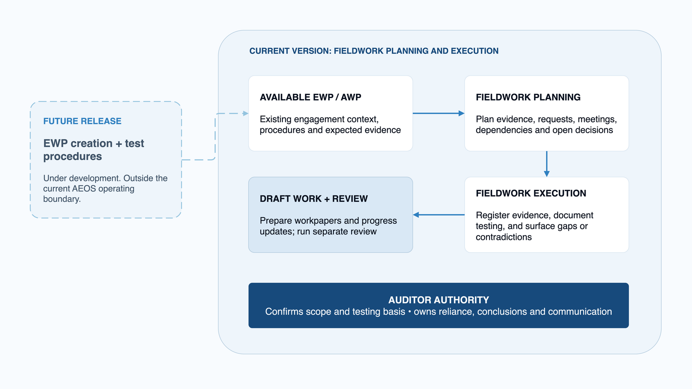
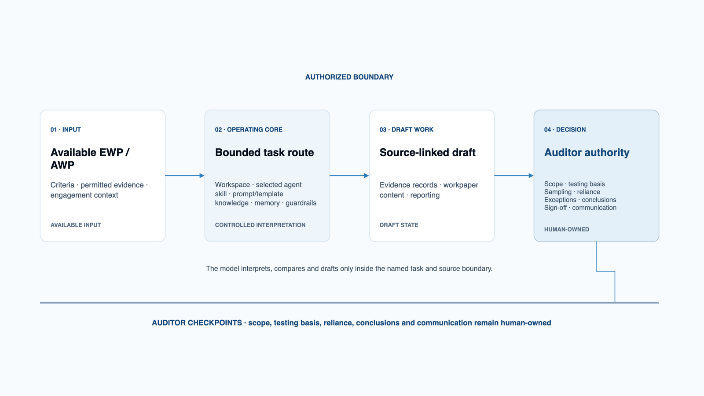
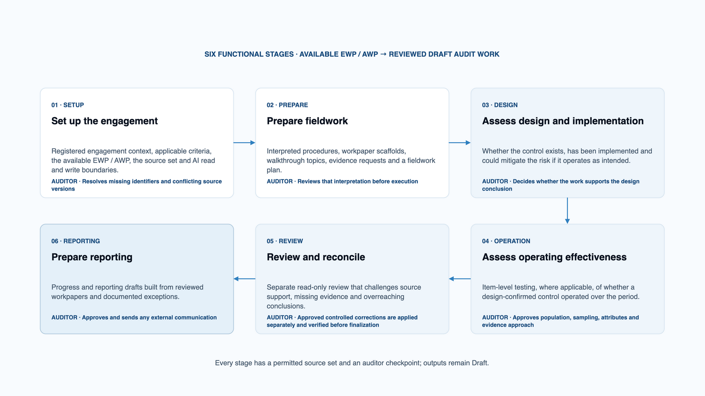
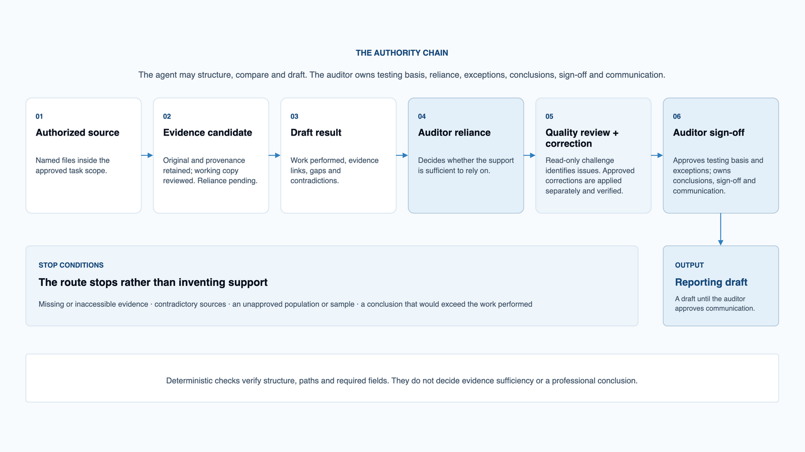

Engagement inputs
What the work may use
- Available EWP / AWP
- Criteria and methodology
- Permitted source boundary
- Engagement context
AI-Augmented Engagement Operating System
AEOS is the AI-Augmented Engagement Operating System. It brings the available engagement work program, context, evidence, meetings, testing, workpapers, review, progress reporting and reporting drafts into one file-based working environment.
What AEOS supports
AEOS begins with an available Engagement Work Program (EWP), also referred to as an Audit Work Program (AWP). Its current focus is fieldwork planning and execution. It does not yet create the EWP or its test procedures; that capability is under development for a future release.
AEOS prepares the engagement workspace, checks readiness for substantive work, and establishes the context, permitted source boundary, criteria and methodology.
AEOS works from the available EWP, prepares separate Draft workpapers, and plans procedures, evidence, information requests, meetings, dependencies and open auditor decisions.
It prepares meeting material, records factual minutes, registers evidence, and keeps links between sources, procedures, tests and workpapers. Missing or contradictory information remains visible.
For Audit engagements, AEOS documents Test of Design activities and prepares Test of Effectiveness testing after the auditor confirms the population, sample, attributes and evidence approach.
Draft workpapers move through auditor checkpoints, separate quality review, controlled correction, verification and merging. AEOS also prepares progress updates from the reviewed work.
AEOS supports Draft observation, conclusion and reporting wording, while engagement-local memory keeps next actions, milestone lessons and field-test feedback available to the work.
For Audit engagements, the route can include Test of Design, Test of Effectiveness, quality review, reporting drafts and closure. Advisory engagements follow the available EWP without automatically adopting Audit-specific testing stages or reporting terminology.
How the parts operate as one system
AEOS combines a structured workspace with agents, skills, prompts, templates, knowledge, memory, guardrails and human checkpoints. The workspace supplies the context, the selected agent provides the professional role, the skill controls the task, the template controls the output structure, and the auditor decides whether the work may move forward.
Engagement inputs flow through the governed operating core into draft audit work, while human decisions retain reliance and communication authority.
Engagement inputs
Governed operating core
Draft audit work
Human decisions
The value comes from the connection between these parts. Sources, procedures, work performed, testing, gaps, contradictions, reviews and conclusions remain linked, while professional authority stays with the auditor.


What AEOS looks like in practice
A typical Audit route starts with one procedure from the available EWP. AEOS interprets that procedure inside the engagement context, prepares the fieldwork plan and Draft workpaper, and keeps the expected evidence visible beside the material that was actually obtained.
The procedure, objective, scope, period and expected evidence remain visible. AEOS does not replace them with a generic prompt or create a new work program.
The auditor selects the relevant agent and skill, names the permitted sources and output, and sets the professional checkpoint before the model runs.
Sources are linked to the procedure and workpaper attributes. Missing support, contradictions, reliability questions and unresolved reconciliation remain explicit.
Population and sampling fields stay blank until the auditor confirms the testing basis. AEOS may prepare analysis and Draft wording; the auditor evaluates exceptions and owns the conclusion.
Fictional public example
The public example follows a procedure assessing whether changes to a generative AI service are evaluated, authorized, deployed and monitored through change management. The records and engagement are synthetic.
Where support is missing or sources do not reconcile, AEOS records the condition against the relevant attribute and routes it for follow-up. It does not turn the issue into a tested exception, an operating-effectiveness result or a conclusion.
The engagement lifecycle
AEOS begins with the available EWP or AWP. It does not require one fixed layout: a spreadsheet, structured document or narrative plan can enter through governed interpretation when the source authority and engagement scope are clear.
| Stage | AEOS support | Auditor decision |
|---|---|---|
| 1. Prepare | Creates Draft workpapers, proposed evidence requirements, meeting topics and a fieldwork plan. | Confirms the procedure interpretation, scope and plan. |
| 2. Gather evidence | Registers documents and meeting records, links them to the procedure, and identifies missing or contradictory information. | Decides what may be relied upon and what follow-up is required. |
| 3. Test | Documents Test of Design work and, where applicable, performs item-level Test of Effectiveness testing after the testing basis is confirmed. | Confirms the population, sample, attributes and evidence approach, evaluates exceptions, and owns the assessment. |
| 4. Review | Runs separate quality review, records controlled corrections and verifies the revised workpaper. | Approves corrections and decides whether the work is sufficient. |
| 5. Report | Prepares progress updates and Draft observation, conclusion or reporting wording. | Owns the final conclusion, rating, sign-off and communication. |
A walkthrough can support the design-and-implementation assessment, but it does not establish sustained operation. Advisory engagements follow the available EWP without automatically adopting Test of Design, Test of Effectiveness or Audit reporting stages.

What keeps the work reviewable
Internal audit work is a chain of dependent judgments. A workpaper depends on a defined procedure. A test result depends on retained and reviewed evidence. A conclusion depends on the attributes tested and the exceptions identified.
The states a draft can carry
An expected record was not provided. It is named against the attribute that needed it, not dropped from the analysis.
The registered sources do not answer the question. The question stays open and goes to the auditor.
The record exists, but a field the criterion depends on is absent from it.
A comparison against the criterion is ready. The judgement it supports has not been made.
The source is registered and readable. Its reliability has not been reviewed yet.
Human authorization sits at the points where work changes authority: an available EWP or AWP procedure becomes a Draft workpaper, received material becomes relied-upon evidence, a test result becomes an audit assessment, and a reviewed conclusion becomes external communication.

Technology without lock-in
The current setup uses Markdown as the durable working format, Obsidian for engagement navigation, and Visual Studio Code with GitHub Copilot Chat as the main AI harness. AEOS does not require a separate application backend, database, Python environment or Git repository for its default core.
| What you get | What it is | What you do with it |
|---|---|---|
| Engagement workspace | A folder structure for context, plans, evidence references, workpapers, reviews and reporting drafts. | Open it once per engagement. Everything else runs inside it. |
| Agents and skills | Reusable roles and task methods that define the professional perspective, required inputs and stop conditions. | Select the role and skill that match the fieldwork task. |
| Prompts and templates | Structured task instructions and output formats for plans, registers, workpapers, reviews and reporting drafts. | Use the relevant route and review the Draft it creates. |
| Knowledge and memory | Engagement context, decisions, evidence links, open gaps, working facts and reusable definitions. | Keep the engagement state current so later tasks start from the same record. |
| Guardrails and review controls | Source identity, provenance, working-state labels, gaps, contradictions, separate quality review and human checkpoints. | Confirm reliance, corrections and conclusions before the work moves forward. |
| Deterministic checks | Bounded checks for structure, paths, required fields and packaging. | Run the configured checks. They never decide evidence or conclusions. |
| Optional extensions | Python for repeatable processing and Git for background versioning and recovery. | Add them when the engagement benefits from automation or file history. Neither is required for the AEOS core. |

Setting it up
Open the AEOS folder as a Visual Studio Code workspace and as an Obsidian vault. Both point at the same files.
Check that Visual Studio Code lists the AEOS agents and skills so the relevant task route is selectable in Copilot Chat.
Select an approved route before selecting a model. Copilot-hosted models use an approved service boundary. Local Ollama and Ollama Cloud require Ollama installed and running, at least one local or cloud model available, and the official Ollama.ollama provider extension. Ollama Cloud also requires Ollama sign-in.
Run one supported task against a sample engagement and stop at its auditor checkpoint. Confirm that the Draft appears in the expected location.
Confirm the agent, model, provider boundary, permitted source set and output location that actually ran. Static documentation is not proof of the route.
Requirements
The workspace remains readable and portable. Native originals stay linked and authoritative. AEOS uses reviewed Markdown for its engagement context and working artifacts, while source documents can remain in their original formats.
Ollama.ollama provider extensionOllama.ollama provider extensionAEOS supports defined provider routes rather than generic model independence. The auditor chooses an approved route, then selects a model with the context, source-mapping, structured-output and file-tool capability required for the task.
Common questions
Ollama.ollama provider extension. Ollama Cloud also requires Ollama sign-in. There is no AEOS server, backend or hosted service.AEOS